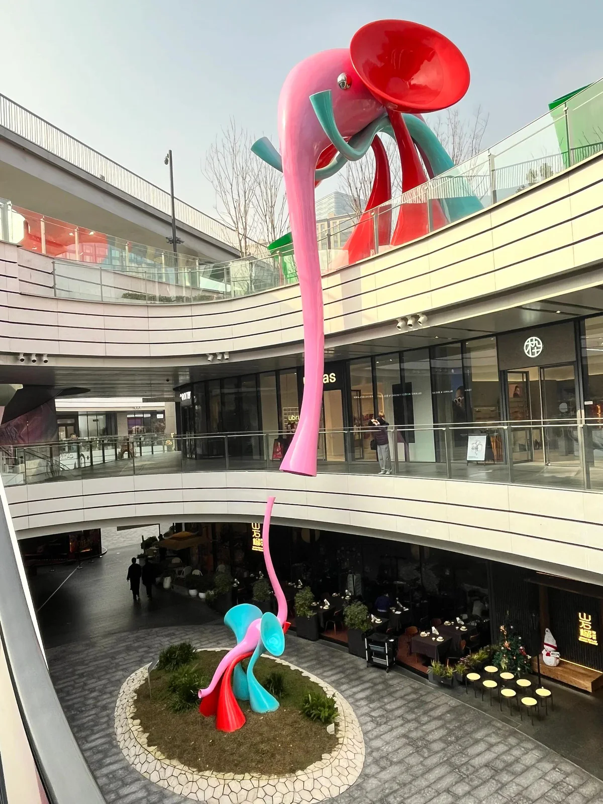
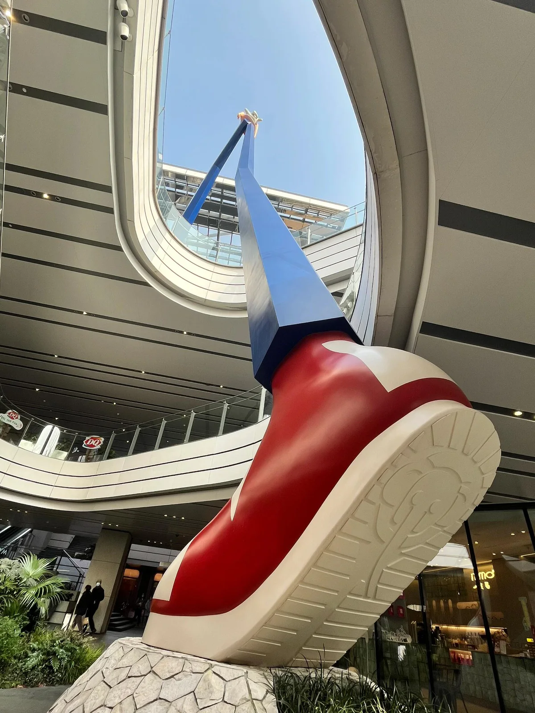
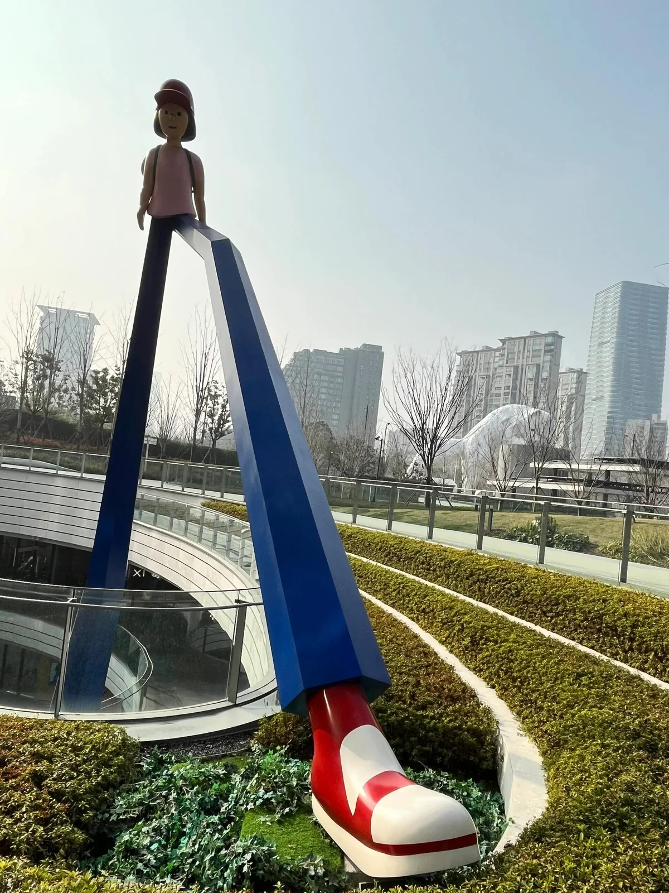
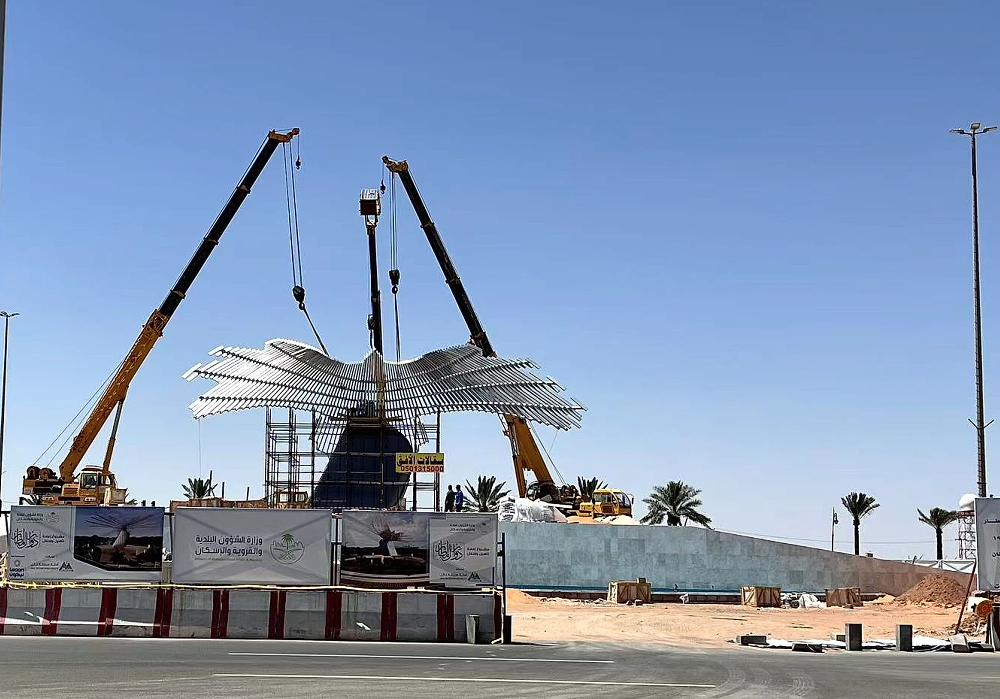

Can you assess an existing atrium?
Yes. Share floor plans, a section or clear-height measurements, photographs and the intended installation window. Access and protection of occupied areas are part of the initial review.
Atrium / interior landmark
WEIERYANG is a sculpture studio and manufacturer based in China. We make custom sculptures from client drawings or develop original designs with designers, contractors, suppliers, developer procurement teams and private owners.
An atrium sculpture is seen from several floors at once. Develop its silhouette and scale with the building team, with clearances, structural interfaces and installation access considered together.
Authorized commercial-atrium references, not completed WEIERYANG hotel commissions. The photographed form, mounting system and materials are not offered as verified specifications or as a replica product.




Our project scope can include sculpture design, structural development, fabrication, export packing and overseas installation guidance.
The Middle East flying-bird record documents segmented assembly, lifting and on-site alignment. These are construction-phase photographs, not completed hotel commissions or workshop inspection records. Agree the project drawings, samples and fabrication checks to be supplied for your commission before production.
Before ordering, confirm the design, material, approvals, shipping, on-site services and local installation responsibilities in writing for your project.
Yes. Share floor plans, a section or clear-height measurements, photographs and the intended installation window. Access and protection of occupied areas are part of the initial review.
The support approach is developed for each design and building. A photograph does not establish a verified hanging system; structural responsibilities and local approvals must be agreed in the proposal.
WEIERYANG is a sculpture studio and manufacturer based in China. We make custom sculptures from client drawings or develop original designs with designers, contractors, suppliers, developer procurement teams and private owners.
Before ordering, confirm the design, material, approvals, shipping, on-site services and local installation responsibilities in writing for your project.